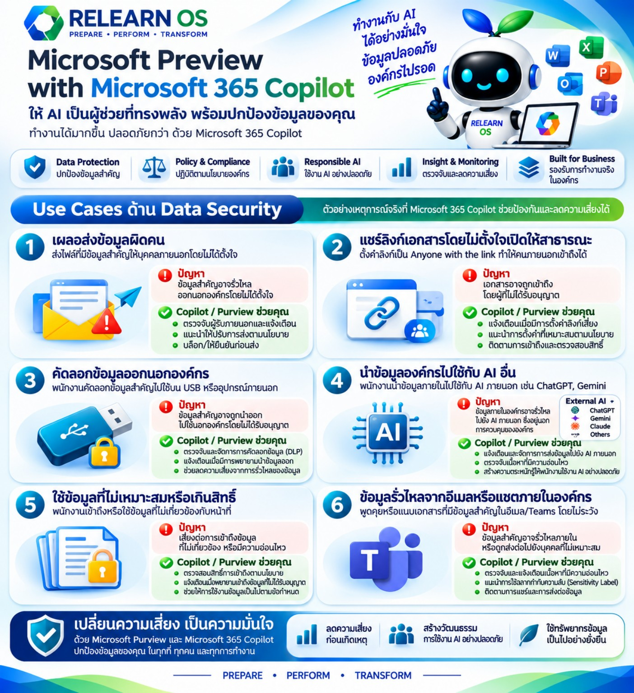

← กลับ QPM Learning HubRELEARN OS
PREPARE • PERFORM • TRANSFORM
Microsoft Preview
with Microsoft 365 Copilot
ให้ AI เป็นผู้ช่วยที่ทรงพลัง พร้อมปกป้องข้อมูลของคุณ
ทำงานได้มากขึ้น ปลอดภัยกว่า ด้วย Microsoft 365 Copilot
Infographic — เปิดดูและบันทึกภาพ

สามารถกดค้างที่ภาพบนมือถือ หรือคลิกขวาบนคอมพิวเตอร์เพื่อบันทึกหรือคัดลอกภาพได้
Use Cases ด้าน Data Security
1เผลอส่งข้อมูลผิดคน
ส่งไฟล์ที่มีข้อมูลสำคัญให้บุคคลภายนอกโดยไม่ได้ตั้งใจ
ปัญหาส่งไฟล์ที่มีข้อมูลสำคัญให้บุคคลภายนอกโดยไม่ได้ตั้งใจ
Copilot / Purview ช่วยคุณ- ตรวจจับผู้รับภายนอกและแจ้งเตือน
- แนะนำให้ปรับการส่งตามนโยบาย
- บล็อกหรือให้ยืนยันก่อนส่ง
2แชร์ลิงก์เอกสารโดยไม่ตั้งใจเปิดให้สาธารณะ
ตั้งค่าลิงก์เป็น Anyone with the link ทำให้คนภายนอกเข้าถึงได้
ปัญหาตั้งค่าลิงก์เป็น Anyone with the link ทำให้คนภายนอกเข้าถึงได้
Copilot / Purview ช่วยคุณ- แจ้งเตือนเมื่อมีการตั้งค่าลิงก์เสี่ยง
- แนะนำการตั้งค่าที่เหมาะสมตามนโยบายองค์กร
- ติดตามการเข้าถึงและตรวจสอบสิทธิ์
3คัดลอกข้อมูลออกนอกองค์กร
พนักงานคัดลอกข้อมูลสำคัญไปใช้บน USB หรืออุปกรณ์ภายนอก
ปัญหาพนักงานคัดลอกข้อมูลสำคัญไปใช้บน USB หรืออุปกรณ์ภายนอก
Copilot / Purview ช่วยคุณ- ตรวจจับและจัดการการคัดลอกข้อมูล (DLP)
- แจ้งเตือนเมื่อมีการพยายามนำข้อมูลออก
- ช่วยลดความเสี่ยงจากการรั่วไหลของข้อมูล
4นำข้อมูลองค์กรไปใช้กับ AI อื่น
พนักงานนำข้อมูลภายในไปใช้กับ AI ภายนอก เช่น ChatGPT, Gemini
ปัญหาพนักงานนำข้อมูลภายในไปใช้กับ AI ภายนอก เช่น ChatGPT, Gemini
Copilot / Purview ช่วยคุณ- แจ้งเตือนและจัดการการส่งข้อมูลไปยัง AI ภายนอก
- ตรวจจับเนื้อหาที่มีความอ่อนไหว
- สร้างความตระหนักรู้ให้พนักงานใช้งาน AI อย่างปลอดภัย
5ใช้ข้อมูลที่ไม่เหมาะสมหรือเกินสิทธิ์
พนักงานเข้าถึงหรือใช้ข้อมูลที่ไม่เกี่ยวข้องกับหน้าที่
ปัญหาพนักงานเข้าถึงหรือใช้ข้อมูลที่ไม่เกี่ยวข้องกับหน้าที่
Copilot / Purview ช่วยคุณ- ตรวจสอบสิทธิ์การเข้าถึงตามนโยบาย
- แจ้งเตือนเมื่อพยายามเข้าถึงข้อมูลที่ไม่ได้รับอนุญาต
- ช่วยให้การใช้งานข้อมูลเป็นไปตามข้อกำหนด
6ข้อมูลรั่วไหลจากอีเมลหรือแชตภายในองค์กร
พูดคุยหรือแนบเอกสารที่มีข้อมูลสำคัญในอีเมลหรือ Teams โดยไม่ระวัง
ปัญหาพูดคุยหรือแนบเอกสารที่มีข้อมูลสำคัญในอีเมลหรือ Teams โดยไม่ระวัง
Copilot / Purview ช่วยคุณ- ตรวจจับและแจ้งเตือนเนื้อหาที่มีความอ่อนไหว
- แนะนำการใช้ป้ายกำกับความลับ (Sensitivity Label)
- ติดตามการแชร์และการส่งต่อข้อมูล
เอกสารประกอบการเรียนรู้ RELEARN OS × QPM • เนื้อหาอธิบายกรณีตัวอย่าง ความสามารถในการป้องกันขึ้นกับการตั้งค่า Microsoft Purview และนโยบายขององค์กร